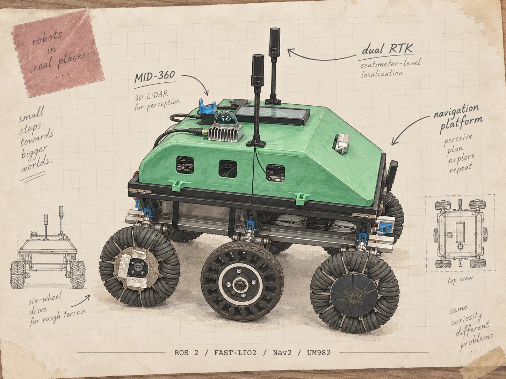

FIELD NOTE / 01
Finding the way.
XJTLU Autonomous Vehicle Research Platform
RTK route navigation, LiDAR odometry, mapping and local planning on a real ROS 2 rover platform.
ROS 2 · FAST-LIO2 · Nav2 MPPI · UM982 RTK · Jetson Orin NX
global route + local perception →
